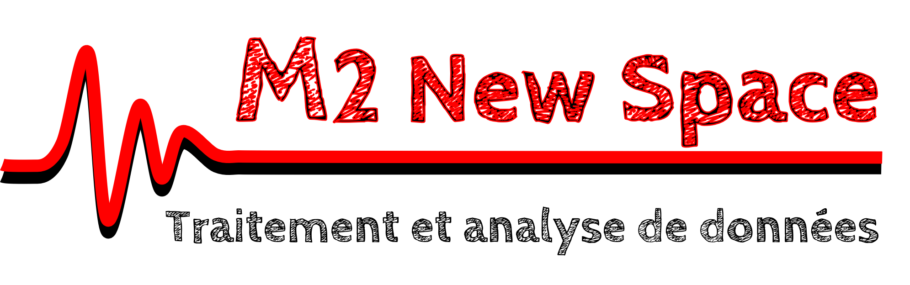

M2 NewSpace : Traitement du signal

Cours conçu pour les étudiants du M2 "NewSpace" de l'Université de Versailles Saint-Quentin (UVSQ), dans le cadre de l'UE "Traitement et analyse de données instrumentales"
Objectifs du cours
Ce cours portera sur la mise en place d'une chaîne de traitement de données avec Python.
L'objectif est qu'à la fin de ce cours vous soyez capables d'implémenter une chaîne de traitement pour les données d'un instrument, comprenant les étapes suivantes :
-
Importation des données à partir d'un fichier HDF5.
-
Filtrage / réduction du bruit.
-
Analyse spectrale (FFT, fenêtrage, interpolation).
-
Interprétation physique.
-
Affichage graphique et exportation.
Ce cours sera divisé en 3 temps :
-
Un 1er tutoriel sur les données du radar météorologique ROXI, que vous trouverez sur ce site web.
-
Un 2nd tutoriel sur les données du radar à pénétration de sol martien WISDOM, que vous trouverez également sur ce site web.
-
Un projet évalué lors duquel vous mettrez en application ce que vous avez appris, sur un nouvel exemple.
Tutoriels
Evaluation
Credits
© Nicolas OUDART